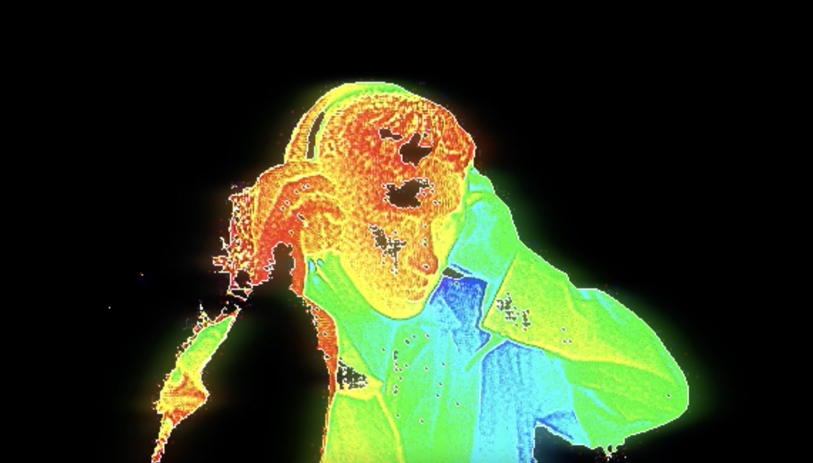

About rayul
i am a visual artist who plays many different roles, focusing on direction and cinematography. i aim to create projects that worlds can be imagined from. through my visual practice i hope to learn, teach and grow my arsenal of creative tools.

- BASED IN
- TORONTO
- AWARDS
- RICHARD LEITERMAN CINEMATOGRAPHY AWARDSHERIDAN COLLEGE BEST FIRST TIME FILMMAKER, PRESENCEMONTREAL INDEPENDENT FILM FESTIVAL HONOURABLE MENTION + BEST FIRST TIME FILMMAKER, PRESENCETOKYO INTERNATIONAL SHORT FILM FESTIVAL
- EXHIBITIONS
- LOVE, ART & BASKETBALL 2025YORKDALE, TORONTO NUIT BLANCHE 2022TORONTO ARTSCAPE
- TEACHING
- UNIVERSITY OF TORONTO, HART HOUSECOLOUR GRADING + HANDS-ON FILMMAKING FOR BEGINNERS
- CONTRACTED
- UNIVERSITY OF TORONTOAUDIOVISUAL TECHNICIAN
- EDUCATION
- SHERIDAN COLLEGEADVANCED FILM AND TV, HIGH HONOURS
- CONTACT
- rayul.vfx@gmail.com